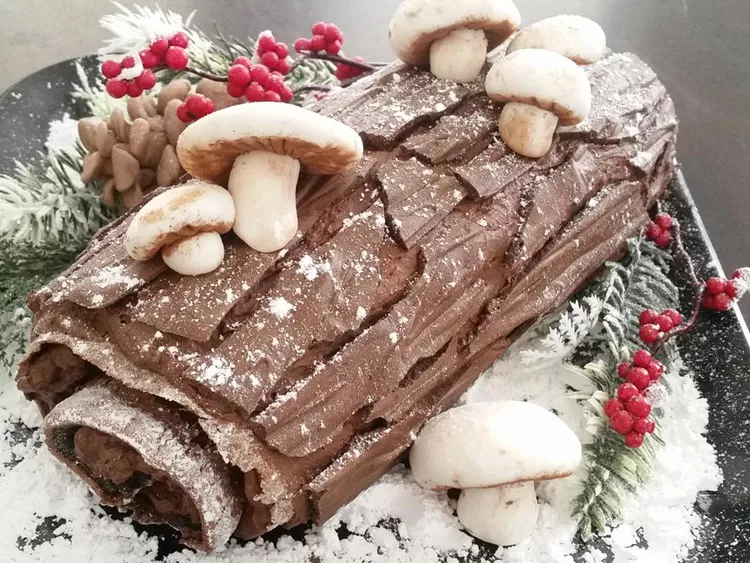

Bûche de Nöel

Description
A bûche de Noël is a sponge cake that is typically served around Christmastime. It's believed to have originated in France during the 19th century.
The cake is filled with frosting and rolled to look like a log. It can also be decorated with frosting to make it more log-like or a simple dusting of confectioners' sugar to resemble snow on a log.
Ingredients
- 2 cups heavy cream
- ½ cup confectioners' sugar
- ½ cup unsweetened cocoa powder
- 1 teaspoon vanilla extract
- 6 egg yolks
- ½ cup white sugar
- ⅓ cup unsweetened cocoa powder
- 1 ½ teaspoons vanilla extract
- ⅛ teaspoon salt
- 6 egg whites
- ¼ cup white sugar
- confectioners' sugar for dusting
Steps
- Preheat oven to 375 degrees F (190 degrees C). Line a 10x15 inch jellyroll pan with parchment paper.
- In a large bowl, whip cream, 1/2 cup confectioners' sugar, 1/2 cup cocoa, and 1 teaspoon vanilla until thick and stiff.
- Refrigerate.
- In a large bowl, use an electric mixer to beat egg yolks with 1/2 cup sugar until pale in color, light and frothy.
- Blend in 1/3 cup cocoa, 1 1/2 teaspoons vanilla, and salt. In large glass bowl, using clean beaters, whip egg whites to soft peaks.
- Gradually add 1/4 cup sugar, and beat until whites form stiff peaks.
- Immediately fold the yolk mixture into the whites.
- Spread the batter evenly into the prepared pan.
- Bake for 12 to 15 minutes in the preheated oven, or until the cake springs back when lightly touched.
- Dust a clean dishtowel with confectioners' sugar.
- Run a knife around the edge of the pan, and turn the warm cake out onto the towel.
- Remove and discard parchment paper. Starting at the short edge of the cake, roll the cake up with the towel.
- Cool for 30 minutes.
- Unroll the cake, and spread the filling to within 1 inch of the edge.
- Roll the cake up with the filling inside.
- Place seam side down onto a serving plate, and refrigerate until serving.
- Dust with confectioners' sugar before serving.